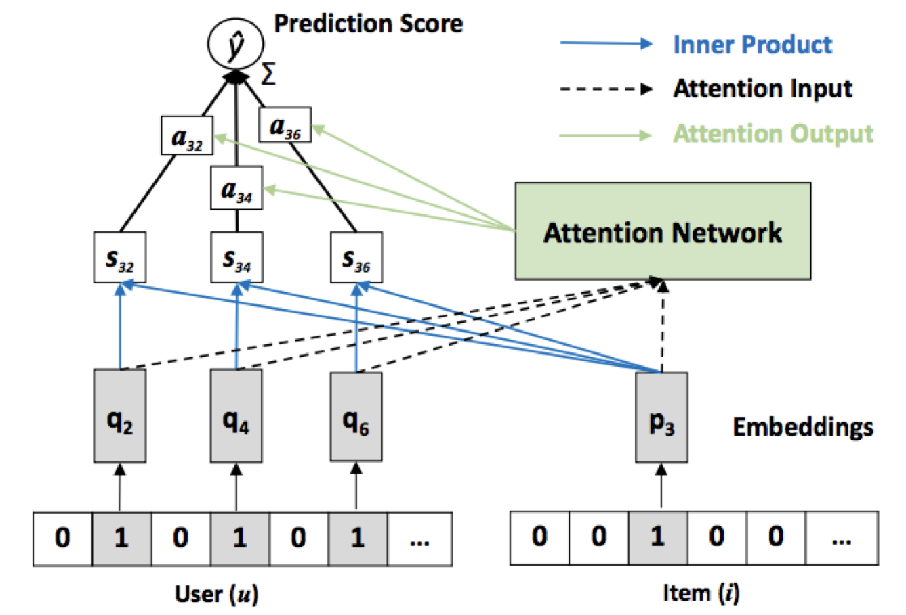

|
Neural Attentive
Item Similarity Model for Recommendation A neural network model with attention mechanism for item-based Collaborative Filtering Model. This model has outperformed the art-of-the-state results. That's a research project in LMS Lab, led by Dr. Xiangnan He |
 |
|
Generative
Discriminative Persona Classification Model A LSTM model for Persona Classification task based on dialogue context. We design Traditional Machine Learning Model as baseline and three main models in our project based on seq2seq, which are Discriminative, Generative and Hierarchical Model. That's a research project with Shihan Ran and Xisen Jin in Fudan. |
 |